Una planta que necesita enviar más, en el mismo canal
Imaginemos una planta de producción con una banda transportadora. Sobre ella hay un nodo de inspección con una cámara y sensores, que envía sus datos por radio hasta la sala de control. Con el tiempo, la planta pide más: más imágenes, más variables, actualizaciones más rápidas. El problema es que el canal de radio asignado tiene un ancho fijo. No podemos simplemente "transmitir más rápido", porque al subir la tasa de símbolos también crece el ancho de banda.
La salida que estudiamos es meter más bits en cada símbolo. QPSK usa 4 puntos en el plano I/Q y lleva 2 bits por símbolo. 16QAM usa 16 puntos y lleva 4. Si las dos se envían a la misma velocidad de símbolos, ocupan el mismo espectro, pero 16QAM transporta el doble.
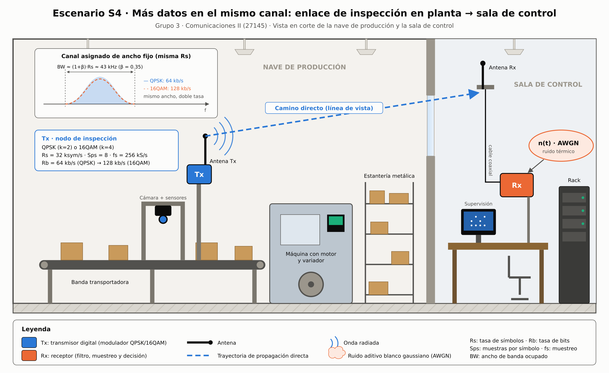
Mismo Rs, mismo pulso, mismo ruido: solo cambia M
Para que la comparación fuera justa, dejamos fijo todo lo que podía influir y solo cambiamos el número de puntos de la constelación. Estas son las relaciones que usamos:
| Parámetro | QPSK | 16QAM |
|---|---|---|
| Puntos M / bits por símbolo k | 4 / 2 | 16 / 4 |
| Tasa de símbolos Rs | 32 ksym/s | 32 ksym/s |
| Tasa de bits Rb | 64 kb/s | 128 kb/s |
| Muestras por símbolo / fs | 8 / 256 kS/s | 8 / 256 kS/s |
| BW lóbulo principal (pulso rectangular, 2·Rs) | 64 kHz | 64 kHz |
| BW con filtro RRC, β = 0.35 | ≈ 43.2 kHz | ≈ 43.2 kHz |
| Distancia mínima entre puntos (Es = 1) | 1.41 | 0.63 |
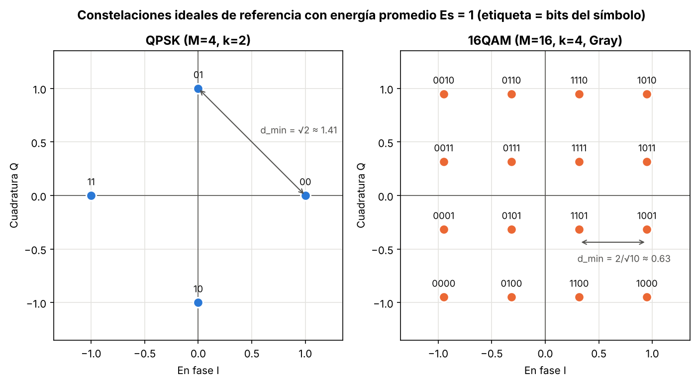
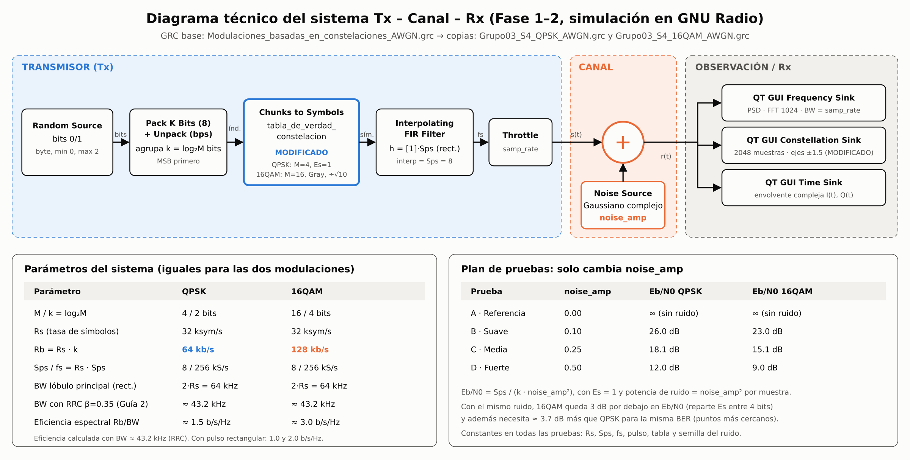
El flujograma y lo que le cambiamos
Partimos del archivo del curso Modulaciones_basadas_en_constelaciones_AWGN.grc. Lo conservamos intacto y trabajamos sobre dos copias, una por modulación. La cadena es sencilla: una fuente de bits aleatorios, un bloque que los agrupa de a k, el Chunks to Symbols que convierte cada grupo en un punto de la tabla, un filtro que repite cada símbolo 8 veces (pulso rectangular) y, al final, la suma con un ruido gaussiano complejo de amplitud noise_amp.
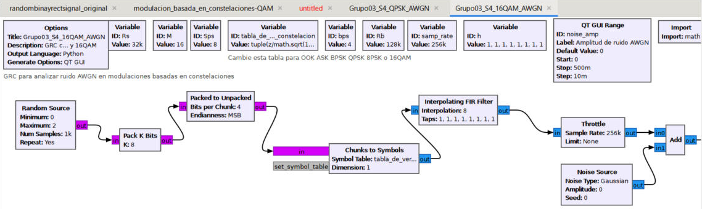
Grupo03_S4_16QAM_AWGN.grc en GNU Radio Companion 3.10. Con solo cambiar la tabla, GNU Radio calcula M = 16, bps = 4 y Rb = 128k.| Bloque / variable | Original | Nuestra versión | Por qué |
|---|---|---|---|
tabla_de_verdad_constelacion | OOK (0, 1) | QPSK (1, j, −j, −1) · 16QAM Gray ÷ √10 | Elegir la modulación con la misma energía |
noise_amp (valor inicial) | 0.10 | 0.0 | Arrancar en la prueba de referencia |
| Constellation Sink | Autoescala | Ejes fijos ±1.5 | Comparar capturas entre pruebas |
gui_hint de los visores | Uno debajo de otro | Cuadrícula | Ver tiempo, PSD y constelación juntos |
Cuatro niveles de ruido, una sola variable
Hicimos las mismas cuatro pruebas para las dos modulaciones y solo movimos noise_amp. Todo lo demás (Rs, Sps, fs, pulso, tabla) quedó igual. Para ponerle números a lo que se ve en pantalla, reprodujimos la misma cadena en Python con un receptor ideal (filtro acoplado y decisión por mínima distancia).
| Prueba | noise_amp | Eb/N0 QPSK | BER QPSK | Eb/N0 16QAM | BER 16QAM |
|---|---|---|---|---|---|
| A · Referencia | 0.00 | ∞ | 0 | ∞ | 0 |
| B · Suave | 0.10 | 26.0 dB | 0 | 23.0 dB | 0 |
| C · Media | 0.25 | 18.1 dB | 0 | 15.1 dB | 0 |
| D · Fuerte | 0.50 | 12.0 dB | 0 | 9.0 dB | 4.2 × 10⁻³ |
Eb/N0 = Sps / (k · noise_amp²). Bits evaluados por prueba: 400 000 (QPSK) y 800 000 (16QAM). Descargar la tabla completa (CSV).
Lo que muestran las capturas de GNU Radio
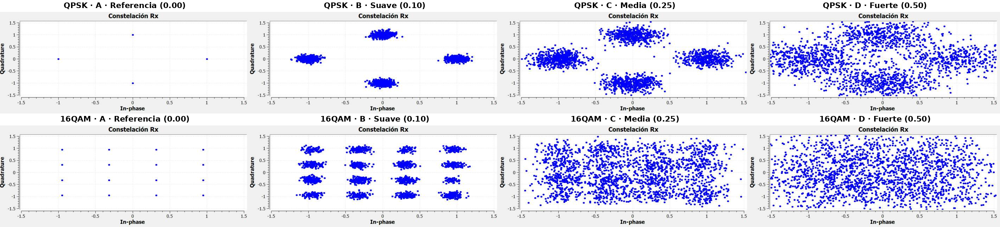
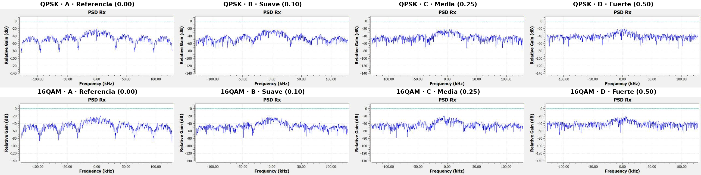
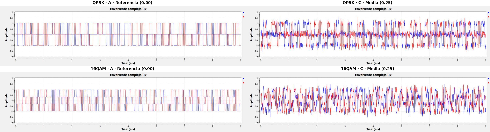
La curva que lo resume
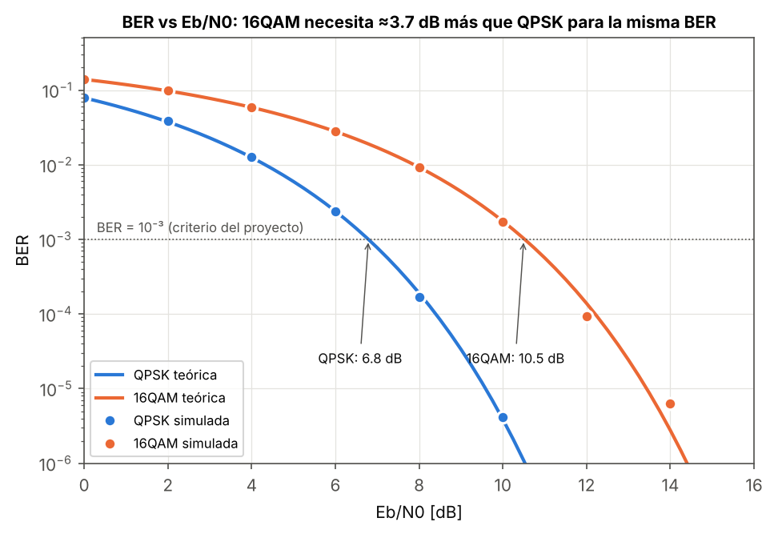
Del simulador al aire: 16QAM a 960 MHz
El 5 de noviembre llevamos 16QAM a hardware con dos HackRF One, uno transmitiendo y otro recibiendo, con antenas, en el laboratorio. Para que el radio recuperara el enlace con estabilidad bajamos la tasa a Rs = 8 ksym/s (Rb = 32 kb/s), con un filtro RRC de β = 0.5. El transmisor envía en bucle una trama conocida: un preámbulo, el mensaje "LAB GNU RADIO 16QAM HACKRF 2026" y un CRC. El receptor sincroniza la portadora y el reloj, corrige los giros de la constelación con el preámbulo y mide los errores.
| Medida en el laboratorio | Valor |
|---|---|
| BER acumulada (mejor condición) | ≈ 0.34 % |
| EVM medio | ≈ 7.4 % |
| Tramas con CRC correcto | 81 % |
| Curva BER vs Eb/N0 (Fase 4) | pendiente |
Hubo una sorpresa: en una de las capturas el receptor decodificó un mensaje que no era el nuestro, con una BER cercana al 29 %. Lo más probable es que se enganchara con el transmisor de otro grupo que usaba la misma frecuencia. Ahí entendimos para qué sirven el preámbulo y el CRC: sin ellos, el receptor no tendría forma de saber que esa trama no era la correcta.
Video de socialización y galería
Galería
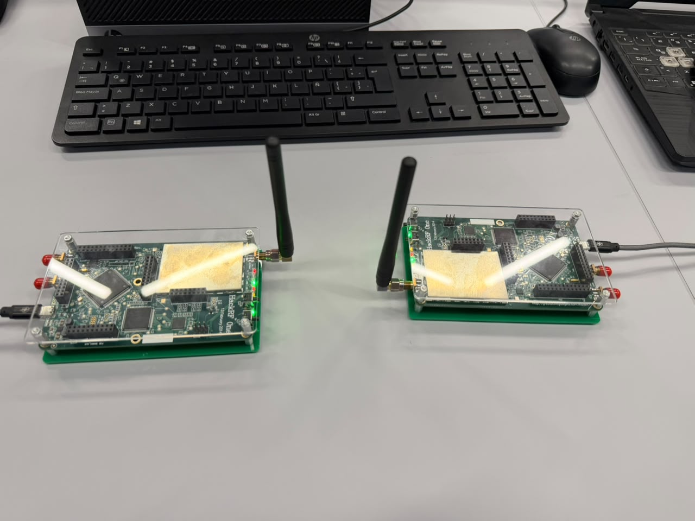
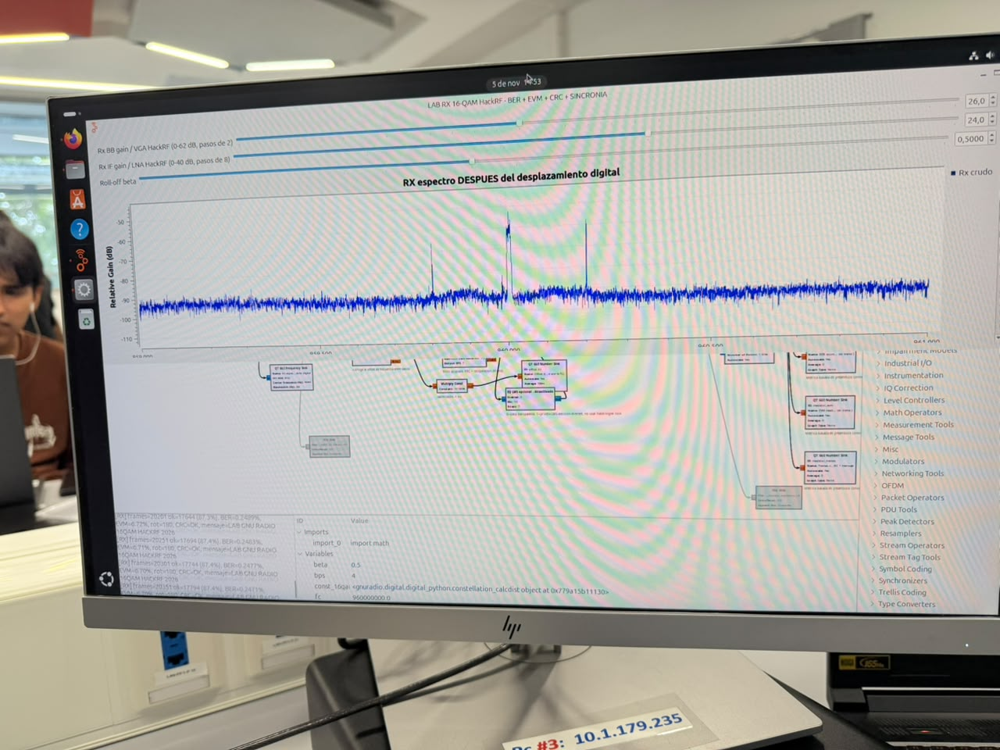
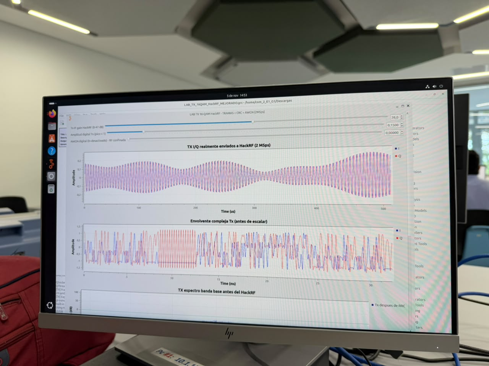
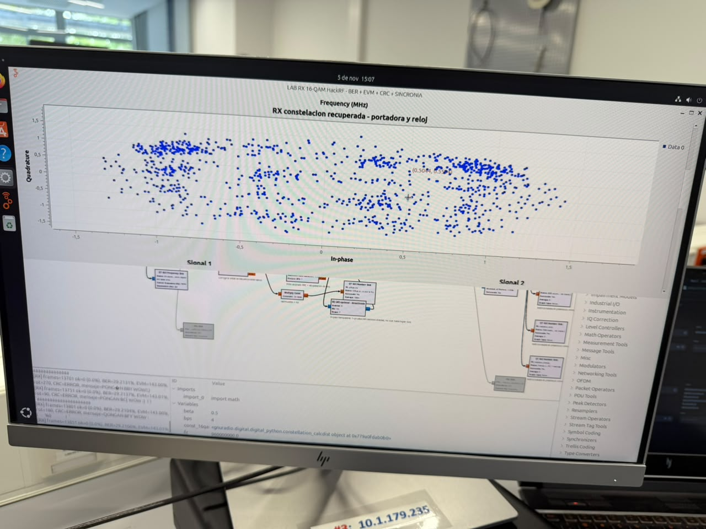
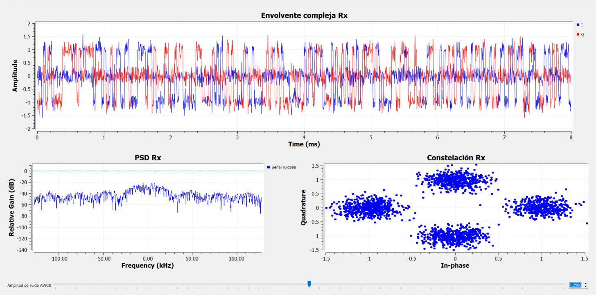
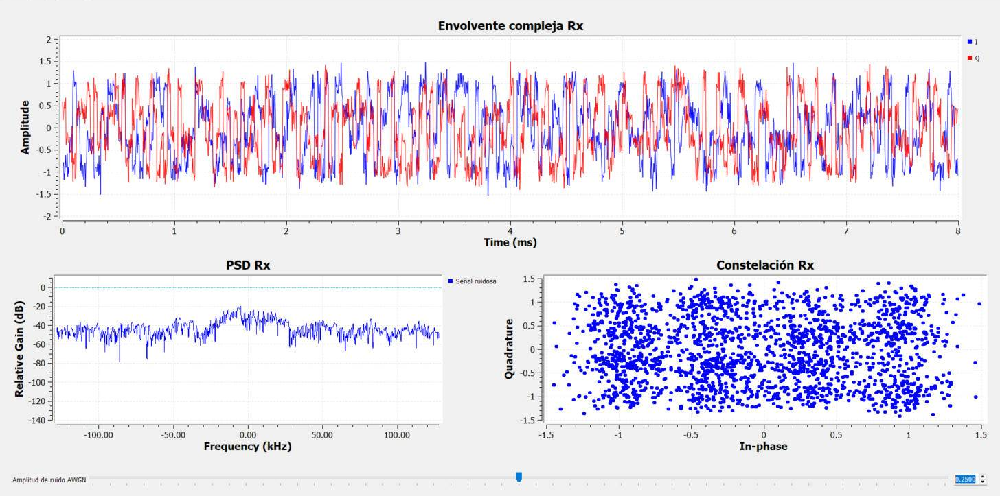
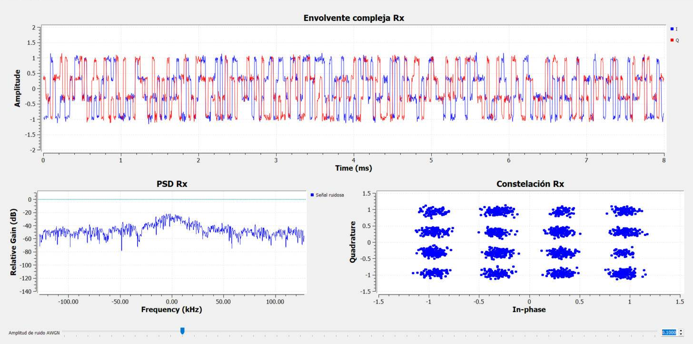
Cómo fue el camino
- 8 de octubreRecibimos la guía del proyecto y revisamos los seis escenarios. Elegimos el S4 porque nos llamó la atención el compromiso entre capacidad y robustez.
- 15 de octubre · Decisión técnica ciegaDefinimos la arquitectura sin saber si era la "correcta": QPSK vs 16QAM, Rs = 32 ksym/s, Sps = 8, fs = 256 kS/s, solo AWGN, cuatro niveles de ruido y la hipótesis de que 16QAM sería más sensible al ruido.
- Fases 1 y 2 · SimulaciónDificultad: al principio 16QAM parecía tan robusta como QPSK. Causa: su tabla tenía 10 veces más energía. Solución: normalizar dividiendo entre √10. También fijamos los ejes de la constelación y organizamos los visores en cuadrícula para comparar las capturas.
- Guía 2Aprendimos el papel del filtro RRC (baja el ancho de banda de 64 a ≈ 43 kHz) y por qué la constelación "sobremuestreada" no es lo mismo que las decisiones del receptor.
- 5 de noviembre · HackRFEnlace real a 960 MHz con BER ≈ 0.34 %. Tuvimos que bajar Rs a 8 ksym/s y vimos la interferencia de otro grupo en la misma frecuencia.
- Fase 4 · en cursoIntegración del instrumento de medición BER (
e_EbN0_Sweepye_BER_Curve) para obtener la curva BER vs Eb/N0 real.
Lo que nos llevamos
Qué aprendimos
Que "más bits por símbolo" no es magia. Ganar capacidad sin gastar espectro siempre se paga en relación señal a ruido. Verlo en la pantalla, con la misma potencia y el mismo ruido, nos dejó una idea mucho más clara que la fórmula sola. También aprendimos que un detalle como normalizar la energía puede invertir por completo una conclusión.
Qué cambiaríamos
Habríamos incluido desde el principio un receptor con filtro acoplado dentro del propio GRC, para medir la BER directamente en GNU Radio y no solo "a ojo" en las constelaciones. Y en el laboratorio, habríamos medido primero por cable antes de pasar a las antenas.
Qué profundizaríamos
Una versión siguiente podría usar modulación adaptativa: medir la calidad del enlace y cambiar entre QPSK y 16QAM según el ruido, como lo hacen el Wi-Fi o el LTE. También nos gustaría repetir la medición BER por aire en distintos puntos de la planta.
Cómo trabajamos
Repartimos el trabajo entre simulación, documentación y laboratorio, pero las decisiones técnicas (parámetros, niveles de ruido, normalización) las discutimos y validamos entre los tres.
Herramientas utilizadas y validación humana
| Herramienta | Para qué la usamos | Cómo la validamos |
|---|---|---|
| GNU Radio Companion 3.10 | Simulación de QPSK y 16QAM con AWGN y capturas | Comprobamos que M, bps, Rb y samp_rate coincidieran con los cálculos a mano |
| HackRF One + GNU Radio | Enlace real 16QAM a 960 MHz | Mensaje recibido, CRC y BER/EVM del receptor |
| Python (NumPy, Matplotlib) | Reproducir el GRC, calcular BER y graficar | BER simulada comparada con la teórica (4.25 × 10⁻³ vs 4.29 × 10⁻³) |
| Claude (asistente de IA) | Organizar el repositorio, programar la simulación, dibujar el escenario y el diagrama de bloques, y redactar borradores del informe y del blog | El equipo revisó cada parámetro, cálculo y figura contra los GRC, la guía y la teoría, y corrigió el texto antes de publicarlo |
Las ilustraciones del escenario y del diagrama de bloques se hicieron con apoyo de IA. Las etiquetas técnicas, los parámetros y los valores los definió y revisó el equipo.
Fuentes (formato IEEE)
- J. G. Proakis and M. Salehi, Digital Communications, 5th ed. New York, NY, USA: McGraw-Hill, 2008.
- B. Sklar, Digital Communications: Fundamentals and Applications, 2nd ed. Upper Saddle River, NJ, USA: Prentice Hall, 2001.
- A. Goldsmith, Wireless Communications. Cambridge, U.K.: Cambridge Univ. Press, 2005.
- S. Haykin, Communication Systems, 5th ed. Hoboken, NJ, USA: Wiley, 2009.
- GNU Radio Project, "GNU Radio Companion," GNU Radio Wiki. [Online]. Available: https://wiki.gnuradio.org
- Great Scott Gadgets, "HackRF One." [Online]. Available: https://greatscottgadgets.com/hackrf/one/
- O. Tíjaro and R. Zamora, "Proyecto Integrador de Comunicaciones II: Guía del estudiante," Universidad Industrial de Santander, 2026.
¿Preguntas o comentarios?
Nos encantaría saber qué te pareció el proyecto, si algo no quedó claro o si se te ocurre una mejora. Puedes dejarnos un comentario abriendo un issue en el repositorio (solo necesitas una cuenta de GitHub).